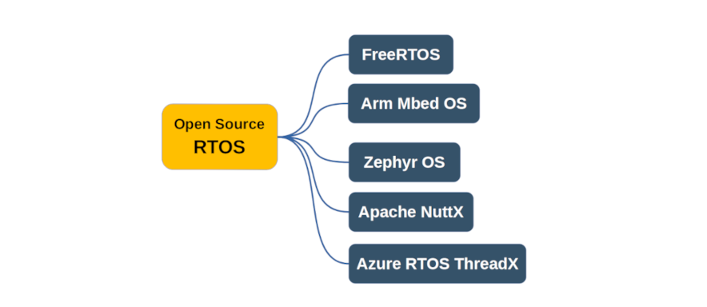

รายการบทความ#
▹ การเรียนรู้ไมโครคอนโทรลเลอร์และระบบสมองกลฝังตัวด้วย Arduino#
หากสนใจการเรียนรู้การเขียนโปรแกรม เช่น ภาษา C/C++ สำหรับบอร์ดไมโครคอนโทรลเลอร์ (Microcontroller: MCU) ซึ่งเป็นพื้นฐานที่สำคัญสำหรับการพัฒนาระบบสมองกลฝังตัว (Embedded Systems) เราจะพบว่า มีตัวเลือกหลากหลายทั้งซอฟต์แวร์และฮาร์ดแวร์ และกล่าวได้ว่า Arduino เป็นหนึ่งในตัวเลือกที่น่าสนใจและเป็นตัวเลือกแรกสำหรับผู้เริ่มต้น → แนะนำให้อ่านบทความภาษาไทยต่อไปนี้
- Arduino Ecosystem: เป็นบทความที่กล่าวถึงความเป็นมา การพัฒนาจากอดีตมาถึงปัจจุบัน ซอฟต์แวร์และฮาร์ดแวร์ที่เกี่ยวข้องกับ Arduino เป็นต้น
- VS Code IDE + PlatformIO for Arduino Programming: แนะนำการใช้งานซอฟต์แวร์อีกตัวเลือกหนึ่งสำหรับการเขียนโค้ด Arduino Sketch สำหรับบอร์ด Arduino Uno Rev.3 หรือ Nano v3.0 แทนการใช้งานซอฟต์แวร์ Arduino IDE
- ปัญหา Switch Bouncing ที่เกิดขึ้นกับวงจรปุ่มกด: การแก้ปัญหาและทดลองใช้งานร่วมกับบอร์ด Arduino Nano (ATmega328P)
- ตัวอย่างการสร้าง C++ Class เพื่อใช้งานเป็นไลบรารีสำหรับ Arduino: RGB LED และ 4x4 Membrane Keypad
- การเขียนโค้ด GCC AVR - Inline Assembly: มีโค้ดตัวอย่างและสาธิตการทำงานด้วยบอร์ด Arduino และจำลองการทำงานด้วย AVR Simulator
- การเขียนโค้ดภาษา C แบบ Bare-Metal และใช้งาน GCC AVR Toolchain สำหรับ AVR (ATmega328P): ตอนที่ 1 | 2
▹ ไมโครคอนโทรลเลอร์ตระกูล Arm Cortex-M Series และซอฟต์แวร์ที่เกี่ยวข้อง#
- Arm CMSIS ถือว่าเป็นพื้นฐานที่สำคัญในการพัฒนาซอฟต์แวร์-เฟิร์มแวร์สำหรับไมโครคอนโทรลเลอร์ที่ใช้สถาปัตยกรรมของซีพียู Arm Cortex-M → ลองมาทำความรู้จักได้จากบทความ: "CMSIS สำหรับซีพียูตระกูล Arm Cortex" และใช้ชิป STM32F4 MCU Series เป็นกรณีศึกษา
- การเขียนโปรแกรม Arduino Sketch โดยใช้ Arduino IDE + STM32duino สำหรับ STM32 มีโค้ดตัวอย่างสำหรับนำไปทดลองกับบอร์ด STM NUCLEO เช่น NUCLEO-L432KC
- บอร์ดไมโครคอนโทรลเลอร์ Black Pill (WeAct Studio) มีชิป STM32F411CEU6 (Arm Cortex-M4F) เป็นตัวประมวลผลหลัก และมีราคาไม่แพง เป็นอีกหนึ่งตัวเลือกสำหรับผู้ที่สนใจฝึกเขียนโปรแกรมไมโครคอนโทรลเลอร์ตระกูล STM32F4 → แนะนำให้อ่านบทความต่อไปนี้
- Raspberry Pi Pico เป็นอีกหนึ่งบอร์ดไมโครคอนโทรลเลอร์ RP2040 ที่ใช้ซีพียู ARM Cortex-M0+ (Dual-Core) และมีราคาถูกเหมาะสำหรับผู้เริ่มต้น → แนะนำให้อ่านบทความต่อไปนี้
- แนวทางการใช้งานบอร์ด Raspberry Pi Pico สำหรับเรียนรู้ระบบสมองกลฝังตัว
- การติดตั้งและใช้งาน Pico SDK for RP2040 และ VS Code / WSL 2 / Ubuntu
- การเขียนโปรแกรมด้วย FreeRTOS Kernel สำหรับบอร์ด Raspberry Pi Pico
- การเขียนโปรแกรมด้วย Arduino Pico Core สำหรับบอร์ด Raspberry Pi Pico
รูป: ตัวอย่างซอฟต์แวร์ประเภท IDEs (Integrated Development Environments) สำหรับการเขียนโปรแกรมและพัฒนาเฟิร์มแวร์สำหรับไมโครคอนโทรลเลอร์
▹ การใช้งานฮาร์ดแวร์และซอฟต์แวร์ของบริษัท Microchip#
หากต้องการใช้ไมโครคอนโทรลเลอร์ของบริษัท Atmel / Microchip เช่น ตระกูล AVR, SAM, PIC แนะนำให้ลองใช้ซอฟต์แวร์ Microchip MPLAB-X IDE
- การใช้งานซอฟต์แวร์ MPLAB-X IDE ในเบื้องต้น: สำหรับไมโครคอนโทรลเลอร์ AVR (ATmega328P)
- การใช้งานซอฟต์แวร์ MPLAB Xpress Cloud IDE ในเบื้องต้น: สำหรับไมโครคอนโทรลเลอร์ AVR (ATmega328P)
- การนำเข้าไฟล์ Arduino Sketch เพื่อใช้งานกับ MPLAB-X IDE สำหรับไมโครคอนโทรลเลอร์ AVR (ATmega328P)
- การใช้งานซอฟต์แวร์ MPLAB-X IDE + Harmony Framework v3 สาธิตการเขียนโค้ดสำหรับไมโครคอนโทรลเลอร์ ATSAMD21 (Arm Cortex-M0+)
▹ ระบบปฏิบัติการเวลาจริงสำหรับไมโครคอนโทรลเลอร์#
ระบบปฏิบัติการเวลาจริง หรือ RTOS (Real-Time OS) เป็นประเภทหนึ่งของระบบปฏิบัติการ (OS) และถือว่าเป็นซอฟต์แวร์ที่สำคัญสำหรับการพัฒนาระบบสมองกลฝังตัว-ไมโครคอนโทรลเลอร์ ดังนั้นความรู้และทักษะเกี่ยวกับการเขียนโปรแกรมแบบมัลติเธรด (Multi-threading) ที่เป็นพื้นฐานสำหรับ OS โดยทั่วไป และต่อยอดไปสู่การใช้งาน RTOS จึงเป็นสิ่งสำคัญสำหรับนักพัฒนาในระดับมืออาชีพ → แนะนำให้เริ่มศึกษาจากบทความต่อไปนี้
- แนวทางการเรียนรู้ RTOS สำหรับผู้เริ่มต้น
-
ตัวอย่างการเขียนโค้ดแบบมัลติเธรด: Multi-Threaded C/C++ Programming with Pthreads (for Linux)
รูป: แผนผังการเรียนรู้เกี่ยวกับระบบสมองกลฝังตัวตามรูปแบบ Top-down Approach

รูป: ตัวอย่างซอฟต์แวร์ประเภท Open Source RTOSes
-
ARM Mbed OS เป็นซอฟแวร์ประเภท Open Source RTOS ที่ได้มีการพัฒนาโดยบริษัท Arm Ltd. และนำมาใช้ได้กับไมโครคอนโทรลเลอร์ที่ใช้ชิปซีพียูตระกูล ARM Cortex-M Series → แนะนำให้อ่านบทความต่อไปนี้ หากสนใจเรียนรู้และใช้งาน Mbed OS
- แนวทางการเรียนรู้ Mbed OS สำหรับผู้เริ่มต้น
- ซอฟต์แวร์ที่เกี่ยวข้องกับการใช้งาน Mbed OS มีให้เลือกหลายแบบและนำมาใช้งานได้ฟรี
ทั้งแบบ Online (Web App) และ Offline (Desktop App) →
หากสนใจ ให้ลองศึกษาจากบทความต่อไปนี้
- Mbed Online Compiler (online)
- Keil Studio Cloud (online)
- Mbed Studio Desktop IDE (offline)
- ARM Mbed CLI 2 (offline)
- การเขียนโปรแกรม Mbed OS ด้วย Mbed Studio IDE สำหรับบอร์ด Black Pill (STM32F4)
- การเขียนโปรแกรม Mbed OS ด้วย Visual Studio Code + PlatformIO สำหรับบอร์ด Black Pill (STM32F4)
- ตัวอย่างการเขียนโค้ด Arm Mbed OS จำแนกตามบอร์ดไมโครคอนโทรลเลอร์ (32 บิต):
-
FreeRTOS เป็นซอฟแวร์ประเภท Open Source RTOS ที่มีการใช้งานแพร่หลาย และสามารถใช้ได้กับไมโครคอนโทรลเลอร์ได้หลายตระกูล และสามารถใช้ร่วมกับ Arduino ได้ด้วย → ลองดูตัวอย่างการเขียนโค้ดได้จากบทความต่อไปนี้
{kind=link}
▹ ไมโครคอนโทรลเลอร์สำหรับงาน IoT#
หากต้องการเลือกใช้ชิปไมโครคอนโทรลเลอร์ที่ไม่ใช่สถาปัตยกรรมของ Arm ก็แนะนำให้ลองใช้ชิป ESP32 Series ของบริษัท Espressif ซึ่งมีจุดเด่นคือ สามารถเชื่อมต่อ Wi-Fi และ Bluetooth ได้ ในปัจจุบันก็มีให้เลือกใช้หลายแบบ
- แนะนำ ESP32 SoCs และตัวเลือกสำหรับฮาร์ดแวร์และซอฟต์แวร์
- ขั้นตอนการติดตั้งและใช้งานซอฟต์แวร์ Espressif ESP-IDF สำหรับ WSL / Ubuntu
▹ ภาษาคอมพิวเตอร์ที่ไม่ใช่ C/C++ สำหรับไมโครคอนโทรลเลอร์#
ภาษา C/C++ เป็นภาษาคอมพิวเตอร์ที่สำคัญสำหรับการพัฒนาโปรแกรมสำหรับระบบสมองกลฝังตัว แต่ในปัจจุบัน Python ก็เป็นอีกหนึ่งภาษาที่ได้รับความนิยม และได้เริ่มมีการนำมาใช้งานสำหรับบอร์ดไมโครคอนโทรลเลอร์ → แนะนำให้อ่านบทความต่อไปนี้
- Python for Hardware Programming: การใข้งาน MicroPython และ Adafruit CircuitPython ในเบื้องต้น
- หากต้องการเรียนรู้เพิ่มเติมเกี่ยวกับ MicroPython / CircuitPython พร้อมตัวอย่างโค้ดสำหรับบอร์ดไมโครคอนโทรลเลอร์หลายแบบ (เช่น STM32, ESP32, RP2040) แนะนำให้ศึกษาจากหนังสือออนไลน์ (ภาษาไทย) ที่ได้จัดทำและเผยแพร่ไว้ใน Gitbook: การเขียนโปรแกรมไมโครคอนโทรลเลอร์ด้วย MicroPython / CircuitPython
▹ ตัวเลือกทางฮาร์ดแวร์ประเภทอื่นที่ไม่ใช่ไมโครคอนโทรลเลอร์#
บอร์ดคอมพิวเตอร์ขนาดเล็กและมีราคาไม่แพง เช่น Raspberry Pi (RPi) ทำงานได้กับระบบปฏิบัติการ Linux (เช่น Ubuntu) จากคำถามที่ว่า ถ้าต้องการใช้ RPi พัฒนาซอฟต์แวร์สำหรับระบบสมองกลฝังตัว-ไมโครคอนโทรลเลอร์ จะมีเครื่องมือที่เป็นซอฟต์แวร์ (Development Tools) ให้ใช้งานได้เหมือนกับคอมพิวเตอร์ Linux Desktop ทั่วไปได้หรือไม่ ตัวอย่างซอฟต์แวร์มีอะไรบ้าง เป็นต้น → แนะนำให้ศึกษาจากบทความภาษาอังกฤษ (เผยแพร่ไว้บน Medium.com) แบ่งเป็น 3 ตอน
ผู้ที่สนใจยังสามารถติดตามข่าวสารอีกช่องทางหนึ่งในรูปแบบของ Facebook Page
→ "IoT Engineering Education"
(https://fb.me/iot.kmutnb)
สัญญาอนุญาตการเผยแพร่#
เผยแพร่ภายใต้สัญญาอนุญาตครีเอทีฟคอมมอนส์ (Creative Commons License): CC BY-SA 4.0
"อนุญาตให้ผู้อื่นสามารถนำผลงานไปใช้ ทำซ้ำ แจกจ่าย หรือดัดแปลงงานนั้นได้ แต่ผลงานที่ดัดแปลงนั้นจะต้องกำกับด้วยสัญญาอนุญาตเงื่อนไขเดียวกันกับต้นฉบับ เว้นแต่ว่าจะได้รับอนุญาตจากเจ้าของผลงานก่อน"
This work is licensed under a Creative Commons Attribution-ShareAlike 4.0 International License.